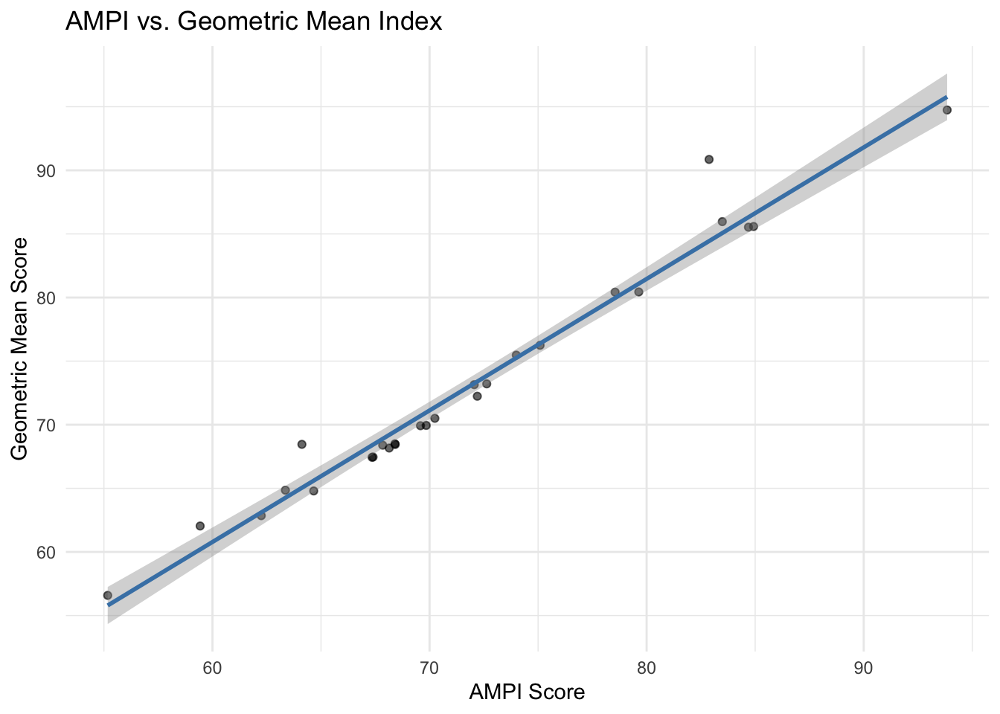

We begin by loading the synthetic dataset and inspecting its structure through correlation analysis and summary statistics.
income education environment
income 1.0000000 0.8187393 -0.1001204
education 0.8187393 1.0000000 0.0496869
environment -0.1001204 0.0496869 1.0000000
income education environment
Min. : 7665 Min. :-3.67 Min. :31.93
1st Qu.: 15322 1st Qu.:13.07 1st Qu.:43.74
Median : 18065 Median :16.45 Median :48.97
Mean : 30912 Mean :18.80 Mean :50.00
3rd Qu.: 32205 3rd Qu.:25.73 3rd Qu.:54.57
Max. :118721 Max. :48.96 Max. :73.77
The histograms below show the raw distribution of each indicator before any transformation is applied.
1.1 Scope of the Analysis
The dataset includes three indicators — income, education, and environment — measured for a set of countries. The goal is to construct a composite index that aggregates these dimensions into a single score reflecting overall performance. The index must be positive (i.e. multidimensional development) and we assume that all 3 indicators are measured in a way that higher values indicate better performance (e.g., higher income, better education outcomes, cleaner environment).
Raw indicators are measured on different scales and units, making direct comparison or aggregation meaningless. We therefore normalize each indicator onto a common scale before aggregating.
2.2 Goalpost and Range
The normalization uses a constrained min-max approach where:
The goalpost (reference point) is the cross-country median of each indicator — i.e., all countries aim at reaching the median European value.
The normalized score is bounded between 70 (worst performer) and 130 (best performer), yielding a symmetric range of ±30 around the central value of 100.
Formula
For each indicator \(x\), the normalized score \(z\) is:
Where all quantities are computed row-wise (i.e., across indicators for each country \(i\)):
Symbol
Meaning
\(\bar{z}_i\)
Mean of normalized scores across indicators
\(\sigma_i\)
Standard deviation of normalized scores across indicators
\(CV_i\)
Coefficient of variation of normalized scores across indicators
Interpretation
The additive correction term \(\sigma_i \cdot CV_i\)rewards countries that perform consistently well across all indicators. A country with high average scores and low relative dispersion will receive a smaller penalty than one with an equivalent mean but highly uneven performance across dimensions.
To benchmark the AMPI approach, we apply a standard min-max normalization followed by geometric mean aggregation — a common composite index methodology (e.g., used in the UNDP Human Development Index since 2010).
5.2 Aggregation: Geometric Mean
Formula
The geometric mean aggregates the \(k\) normalized indicators for each country \(i\) as:
Compared to an arithmetic mean, the geometric mean penalizes imbalance across dimensions: a country with a very low score on any single indicator cannot fully compensate by excelling in others. This property — called imperfect substitutability — is often desirable in multidimensional welfare indices.
⚠️ Note: Because min-max scores can equal exactly 0, and \(\log(0)\) is undefined, a small constant \(\varepsilon\) is added before taking the geometric mean to avoid undefined results: \[GM_i = \left(\prod_{j=1}^{k} (z_{ij} + \varepsilon)\right)^{1/k}\]
epsilon <-1e-6# small constant to avoid log(0)dat_std$GM <-apply(dat_std[,c(1:3)], 1, function(x) {exp(mean(log(x + epsilon)))})dat_std$AM <-rowMeans(dat_std[,c(1:3)])summary(dat_std$GM)
Min. 1st Qu. Median Mean 3rd Qu. Max.
56.58 67.82 69.94 73.04 78.33 94.74
6. Head-to-Head Comparison: AMPI vs. Geometric Mean
6.1 Correlation Between the Two Indices
A high correlation between AMPI and GM would suggest the two methods rank countries similarly despite their different normalization and aggregation choices.
AMPI GM AM
AMPI 1.0000000 0.9837991 0.9602629
GM 0.9837991 1.0000000 0.9947079
AM 0.9602629 0.9947079 1.0000000

6.2 Regression \(R^2\) Comparison Table
We compare how strongly each indicator predicts the composite index under each method:
modX1 <-lm(AMPI ~ income, data = dat_std)modX2 <-lm(AMPI ~ education, data = dat_std)modX3 <-lm(AMPI ~ environment, data = dat_std)modGM_X1 <-lm(GM ~ income, data = dat_std)modGM_X2 <-lm(GM ~ education, data = dat_std)modGM_X3 <-lm(GM ~ environment, data = dat_std)modAM_X1 <-lm(AM ~ income, data = dat_std)modAM_X2 <-lm(AM ~ education, data = dat_std)modAM_X3 <-lm(AM ~ environment, data = dat_std)
Comparison of indicator-level \(R^2\) values across aggregation methods
Indicator
AMPI \(R^2\)
GM \(R^2\)
AM \(R^2\)
Income
0.460
0.577
0.637
Education
0.617
0.707
0.745
Environment
0.330
0.265
0.219
6.3 Summary Comparison Table
Methodological comparison of the two composite index approaches
Feature
AMPI
Min-Max + Geometric Mean
Normalization range
[70, 130]
[0, 1]
Central goalpost
Mean
None (observed extremes)
Aggregation method
Arithmetic mean + SD × CV
Geometric mean
Penalizes imbalance
Yes (via CV term)
Yes (multiplicative)
Sensitive to outliers
Moderate
High
Undefined for zero values
No
Yes (requires ε adjustment)
8. Correspondence Table: Raw Indicators, AMPI and Geometric Mean Rankings
We build a unified ranking table that displays, for each country, both the raw indicator values and the rank assigned by each composite index. This allows a direct visual audit of how normalization and aggregation choices affect country standings.
8.1 Rank Disagreement Between AMPI and Geometric Mean
Countries where the two methods disagree most reveal the sensitivity of rankings to methodological choices. A large rank gap signals that a country’s position is not robust — it depends heavily on how normalization and aggregation are specified.
Top 20Countries ranked by disagreement between AMPI and Geometric Mean index